True Anomaly
The angle that tells you where on the orbit a body is right now, measured from perihelion.

101 · zoom in
Imagine a planet running around its ellipse. We've already given it a size, a shape, a tilt. The one thing we still need is: where is it on the loop right this instant? That's the true anomaly. Stand at the Sun, point at the planet's closest pass, and measure the angle to where the planet actually is. That's it.
But here's the catch — and this is where Kepler's second law sneaks in. The planet doesn't sweep this angle at a steady pace. Near the close pass it whips around fast. Out at the far end it lumbers. So if you ask 'how many degrees per day?', the answer changes constantly throughout the orbit.
Astronomers got tired of that, so they invented two other angles — mean anomaly and eccentric anomaly — that DO tick at a steady pace, and built a tiny ladder of equations connecting all three. When you watch the planets move smoothly in /explore, that ladder is what's running under the hood, sixty times a second.
The Keplerian elements describe the shape and orientation of an orbit; true anomaly (`ν`) tells you where the body is along that orbit at a given instant. Stand at the focus (the Sun, for a planet), point at perihelion, and rotate your finger to follow the body around. The angle you sweep is the true anomaly.
It runs from 0 at perihelion (closest approach) through 90° (a quarter of the way) to 180° at aphelion (farthest), and back. Unlike a clock, it doesn't tick uniformly — Kepler's second law tells you the body races near perihelion and crawls near aphelion. So true anomaly per second changes throughout the orbit.
Sister angles you'll meet: mean anomaly (`M`), which does tick uniformly with time but is geometrically meaningless; and eccentric anomaly (`E`), the bridge between them. `M` advances at constant rate, you solve Kepler's equation `M = E - e·sin(E)` to get `E`, then convert to `ν`. The chain is the heartbeat of every orbital simulator including Orrery's.
SEE IN THE APP
- /explore Each planet's current position around the Sun is its true anomaly